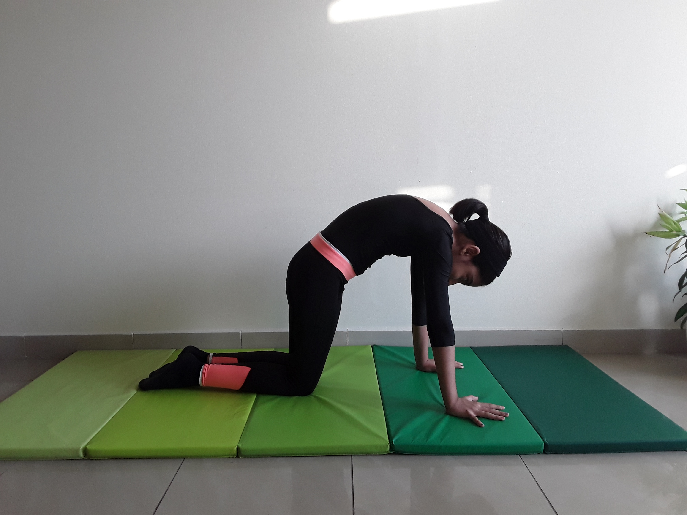

CAT POSE

Steps to perform Cat Pose
- Start on your hands and knees in a “tabletop” position. Make sure your knees are set directly below your hips and your wrists, elbows and shoulders are in line and perpendicular to the floor. Center your head in a neutral position, eyes looking at the floor.
- As you exhale, round your spine toward the ceiling, making sure to keep your shoulders and knees in position. Release your head toward the floor, but don’t force your chin to your chest.
- Inhale, coming back to neutral “tabletop” position on your hands and knees.
- This pose is often paired with cow pose on the inhale for a gentle, flowing vinyasa.